library(tidyverse)
library(scales)
library(gridExtra)
# Load the historical data
troops <- read_csv("data/Minard.troops.csv") |>
select(longitude = long, latitude = lat, direction, survivors, group)
minard_temps <- read_csv("data/Minard.temp.csv") |>
uncount(days) |>
mutate(day_index = 1:n())
cities <- read.table("data/cities.txt",
header = TRUE, stringsAsFactors = FALSE)Data Visualization
SPS 502
Data Visualization
The Datasaurus Dozen
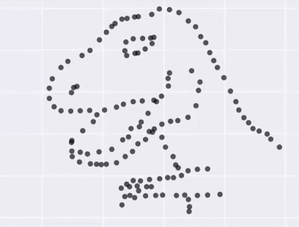
The summary stats are virtually the SAME!!!
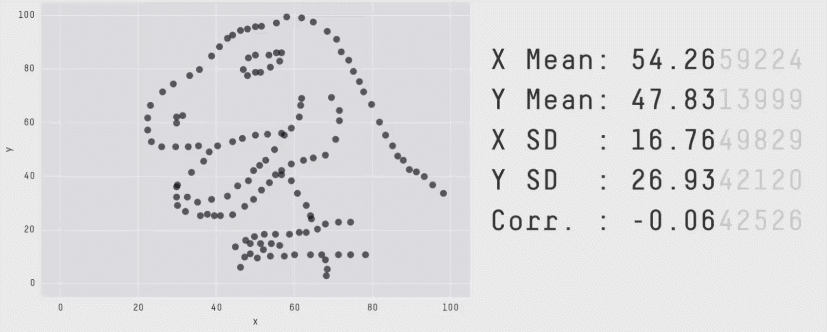
“never trust summary statistics alone; always visualize your data”
– Alberto Cairo
Author of The Truthful Art
The Best Stats You’ve Ever Seen
https://www.ted.com/talks/hans_rosling_shows_the_best_stats_you_ve_ever_seen?language=en
Data Visualization as Story Telling
Graphs let us see patterns in our data
Sometimes graphs alone are sufficient for telling our story and drawing inferences from our data
John Snow
- Soho, London 1854
- Severe cholera outbreak
- Thousands fell ill and at least 600 died
Cholera and Miasma Theory
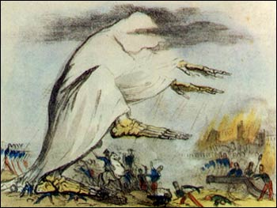
John Snow
- Skeptical of miasma theory
- Believed cholera outbreaks were related to contaminated water
- Investigated the 1854 outbreak and began to suspect the Broad Street pump
“Within 250 yards of the spot where Cambridge Street joins Broad Street there were upwards of 500 fatal attacks of cholera in 10 days… As soon as I became acquainted with the situation and extent of this irruption (sic) of cholera, I suspected some contamination of the water of the much-frequented street-pump in Broad Street … There were only ten deaths in houses situated decidedly nearer to another street-pump. In five of these cases the families of the deceased persons informed me that they always sent to the pump in Broad Street, as they preferred the water to that of the pumps which were nearer. In three other cases, the deceased were children who went to school near the pump in Broad Street.”
Broad Street Implications
Beginning of germ theory and beginning of the end for miasma theory
Major catalyst for modern epidemiology
Read more in Steven Johnson’s book —>
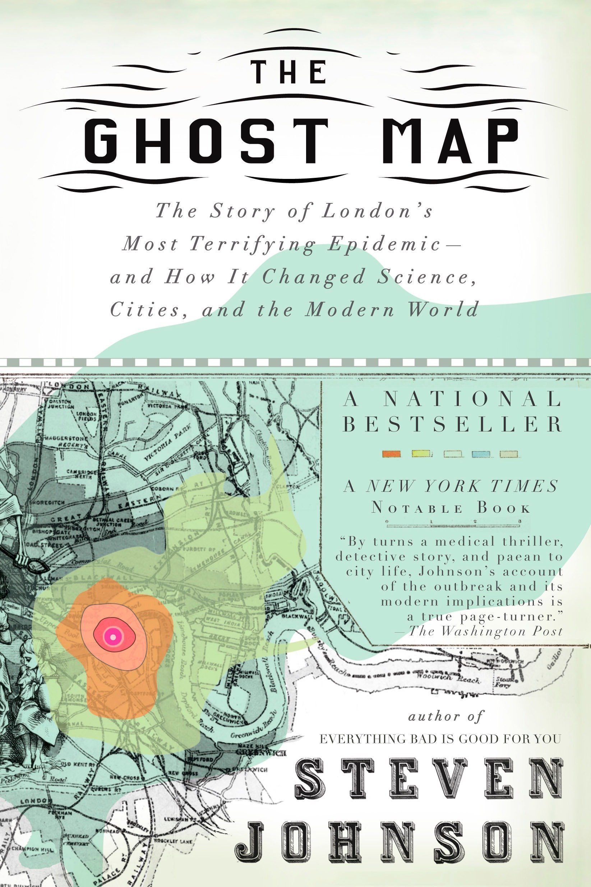
Napoleon’s 1812 March on Russia
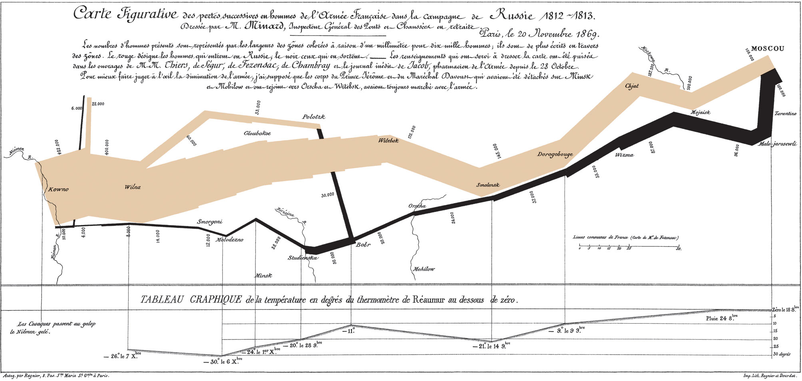
The Grammar of Graphics
grammar: “the fundamental principles or rules of an art or science”
A statistical graphic is a mapping of data variables to aesthetic attributes of geometric objects.
The components of grammar:
Grammar Components
data : information from the dataset we map.
geom : the geometric object in question (points, lines, bars).
aes : aesthetic attributes of the geometric object that we can perceive on a graphic (x/y position, color, shape, and size).
facet : breaks up a plot into small multiples corresponding to the levels of another variable
position : adjustments for barplots
Napoleon’s 1812 March on Russia in R
Setup
The Story
Temperature During Retreat
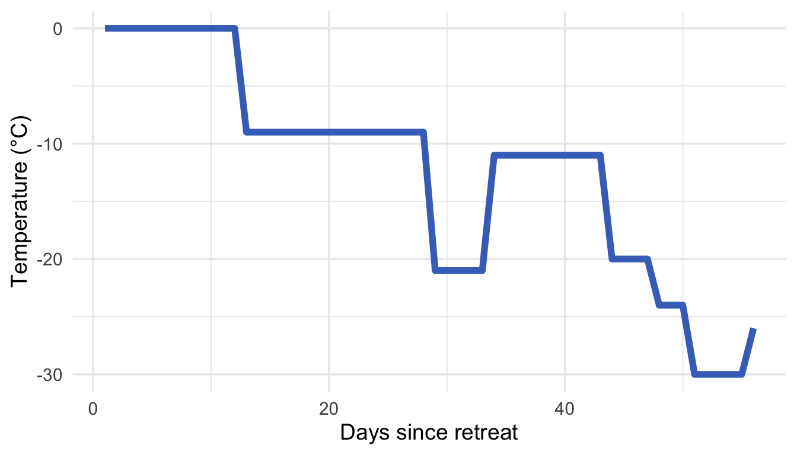
Army Casualties
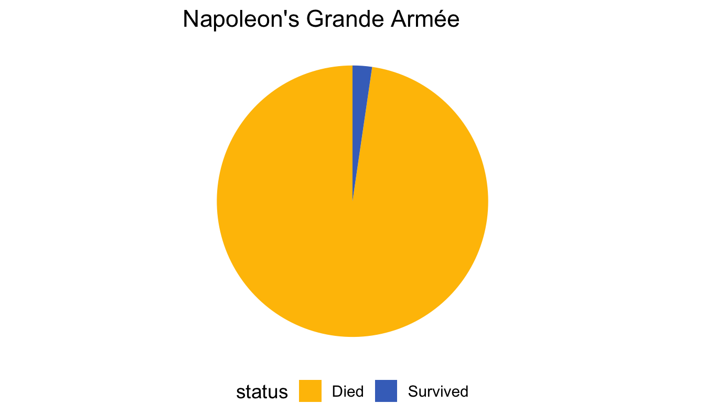
What is Data?
- Columns in a dataset
- Variables we want to visualize
- The information we’re communicating
What is an Aesthetic?
- Visual property of a graph
- Position, shape, color, size, etc.
- How we “see” the data
Our Dataset: troops
| longitude | latitude | direction | survivors | group |
|---|---|---|---|---|
| 24.0 | 54.9 | A | 340000 | 1 |
| 24.5 | 55.0 | A | 340000 | 1 |
| 25.5 | 54.5 | A | 340000 | 1 |
| 26.0 | 54.7 | A | 320000 | 1 |
| 27.0 | 54.8 | A | 300000 | 1 |
Each row represents a point along Napoleon’s march
The Mapping Process
| Data | Aesthetic | Graphic/Geometry |
|---|---|---|
| Longitude | Position (x-axis) | Point |
| Latitude | Position (y-axis) | Point |
| Army size | Size | Path |
| Army direction | Color | Path |
| Date | Position (x-axis) | Line + text |
| Temperature | Position (y-axis) | Line + text |
The Mapping Process
| Data | aes() |
geom |
|---|---|---|
| Longitude | x |
geom_point() |
| Latitude | y |
geom_point() |
| Army size | size |
geom_path() |
| Army direction | color |
geom_path() |
| Date | x |
geom_line() + geom_text() |
| Temperature | y |
geom_line() + geom_text() |
The ggplot2 Template
. . .
Three Essential Components:
- DATA: The dataset to visualize
- GEOM_FUNCTION: The type of plot (points, lines, bars, etc.)
- AESTHETIC MAPPINGS: Which variables map to which visual properties
Building Our Visualization: Step 1
Start with the data and coordinate system:
ggplot(data = troops,
mapping = aes(x = longitude, y = latitude))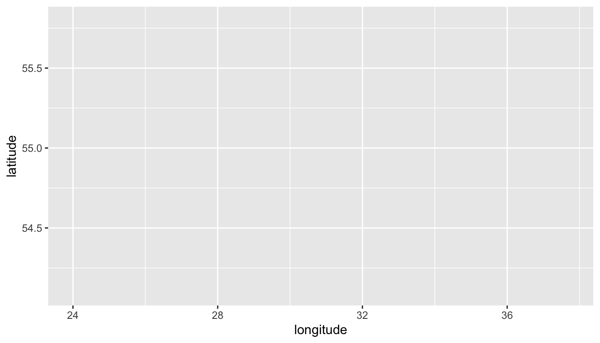
Building Our Visualization: Step 2
Add a geometry layer with geom_path():
ggplot(data = troops,
mapping = aes(x = longitude, y = latitude, group=group)) +
geom_path()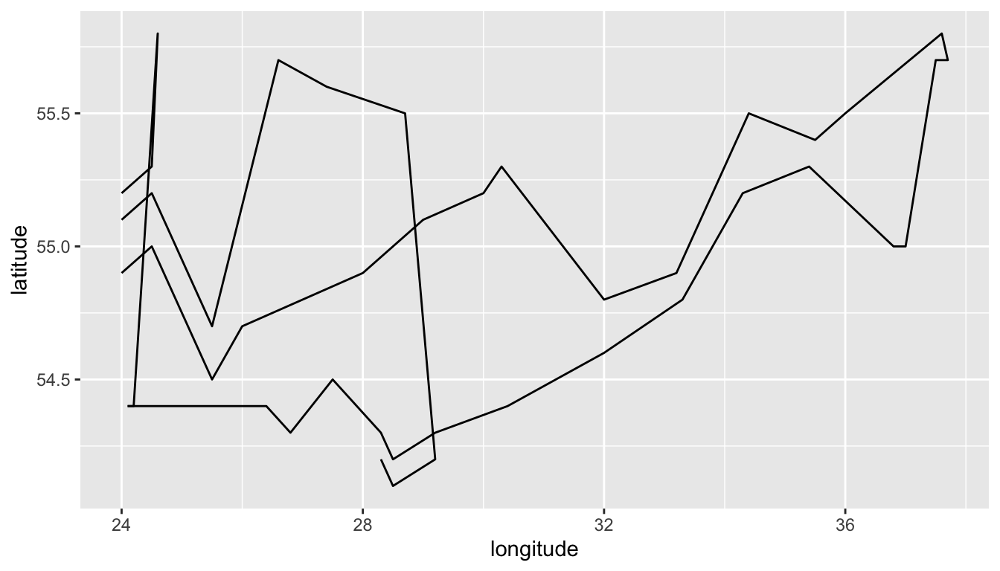
Building Our Visualization: Step 3
Map direction to color:
ggplot(data = troops,
mapping = aes(x = longitude,
y = latitude,
group = group,
color = direction)) +
geom_path()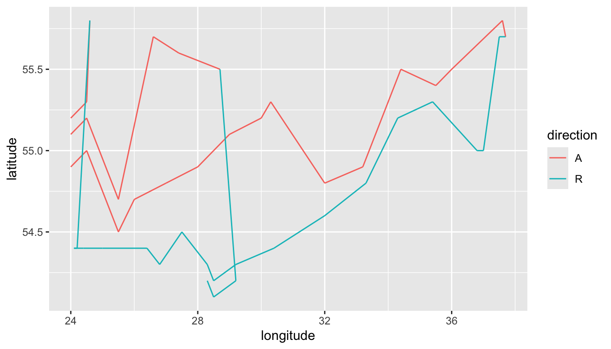
Building Our Visualization: Final
Map survivors to line width:
ggplot(data = troops,
mapping = aes(x = longitude,
y = latitude,
group = group,
color = direction,
linewidth = survivors)) +
geom_path()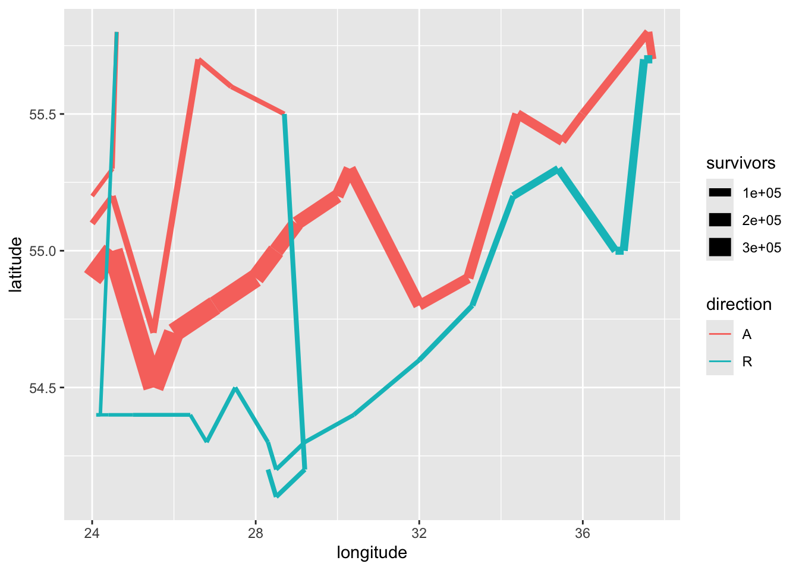
The width shows the devastating losses!
Polishing the Visualization
ggplot() +
geom_path(data = troops,
mapping = aes(x = longitude, y = latitude,
group = group,
color = direction,
linewidth = survivors),
lineend = "round") +
geom_point(data = cities, aes(x = long, y = lat)) +
geom_text(data = cities, aes(x = long, y = lat, label = city), vjust = 1.5) +
scale_linewidth_continuous(range = c(0.5, 15),
labels = label_comma()) +
scale_color_manual(values = c("A" = "tan", "R" = "black")) +
scale_size(range = c(0.5, 15)) +
guides(color = FALSE, linewidth = FALSE) +
labs(title = "Napoleon's 1812 March to Moscow",
x = "Longitude", y = "Latitude",
color = "Direction", linewidth = "Survivors") +
theme_minimal()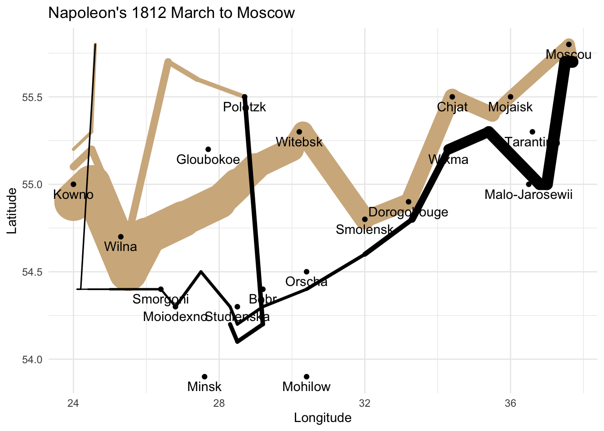
Polishing the Visualization

Adding the temperature visualization
ggplot(data = minard_temps, aes(x = long, y = temp)) +
geom_line() +
geom_text(aes(label = temp), vjust = 1.5)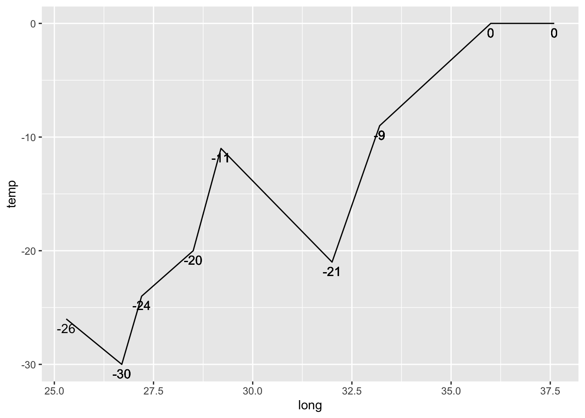
Cleaning it up a bit
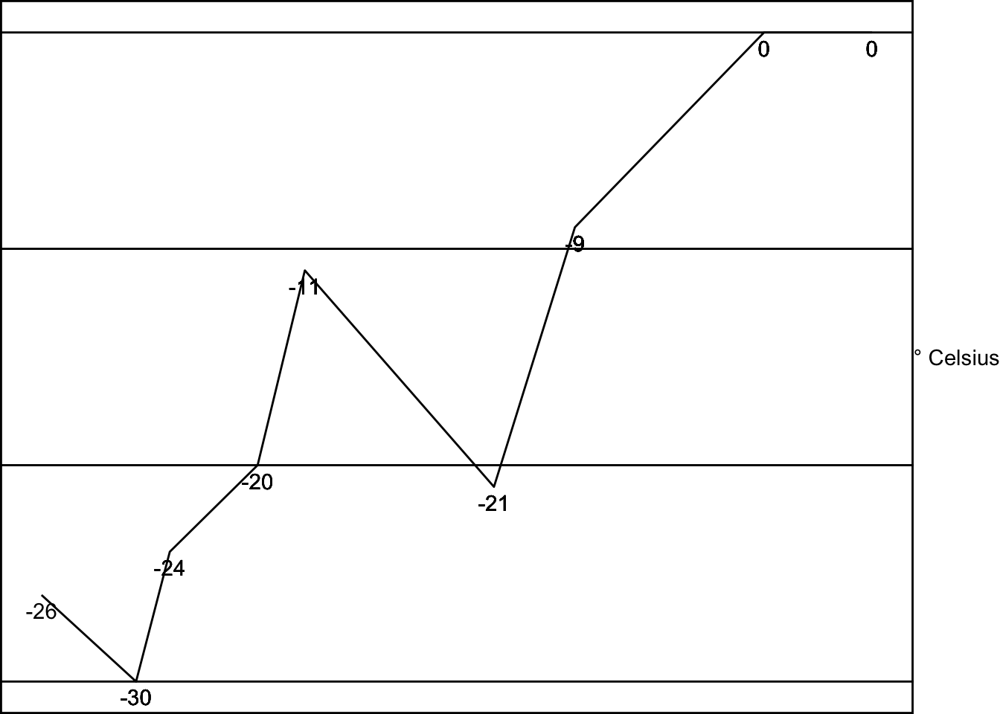
Combining the visualizations
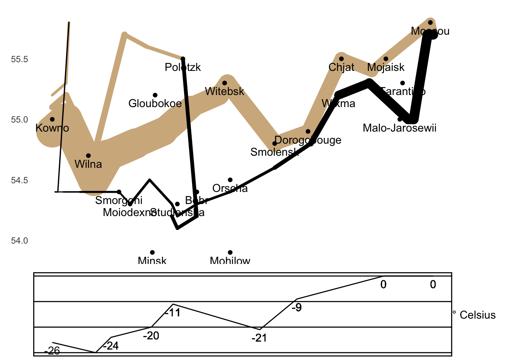
Key Takeaways
- Data visualization is about mapping: Connect data columns to visual properties
- Build incrementally: Start simple, add layers
- Each aesthetic tells a story:
- Position shows geography
- Color shows direction
- Width shows army size
- The grammar of graphics gives us a systematic approach:
- Data + Aesthetics + Geometries = Visualization
The 5 Named Graphs (5NG)
- Scatterplots
- Linegraphs
- Histograms
- Boxplots
- Barplots
Scatterplot Example
Arrival Delays vs Departure Delays for Envoy flights from NYC in 2023
ggplot(data = envoy_flights, mapping = aes(x = dep_delay, y = arr_delay)) +
geom_point()
Linegraph Example
Hourly Windspeeds in Newark for January 1-15, 2023
ggplot(data = early_january_2023_weather,
mapping = aes(x = time_hour, y = wind_speed)) +
geom_line()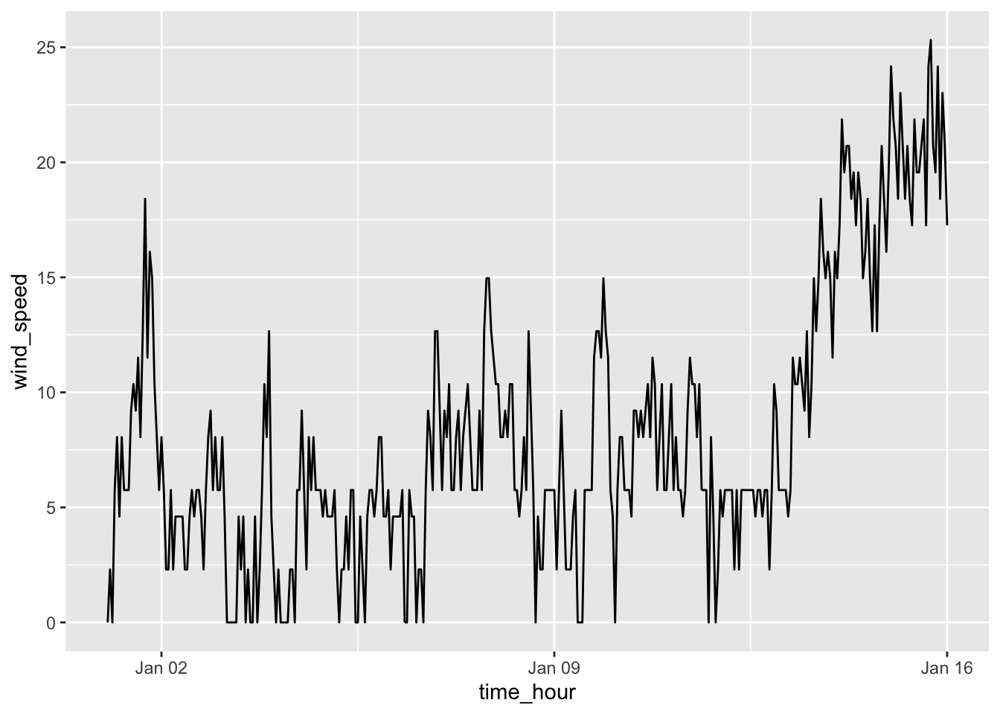
Histogram Example
Histogram of hourly wind speeds at three NYC airports
ggplot(data = weather, mapping = aes(x = wind_speed)) +
geom_histogram()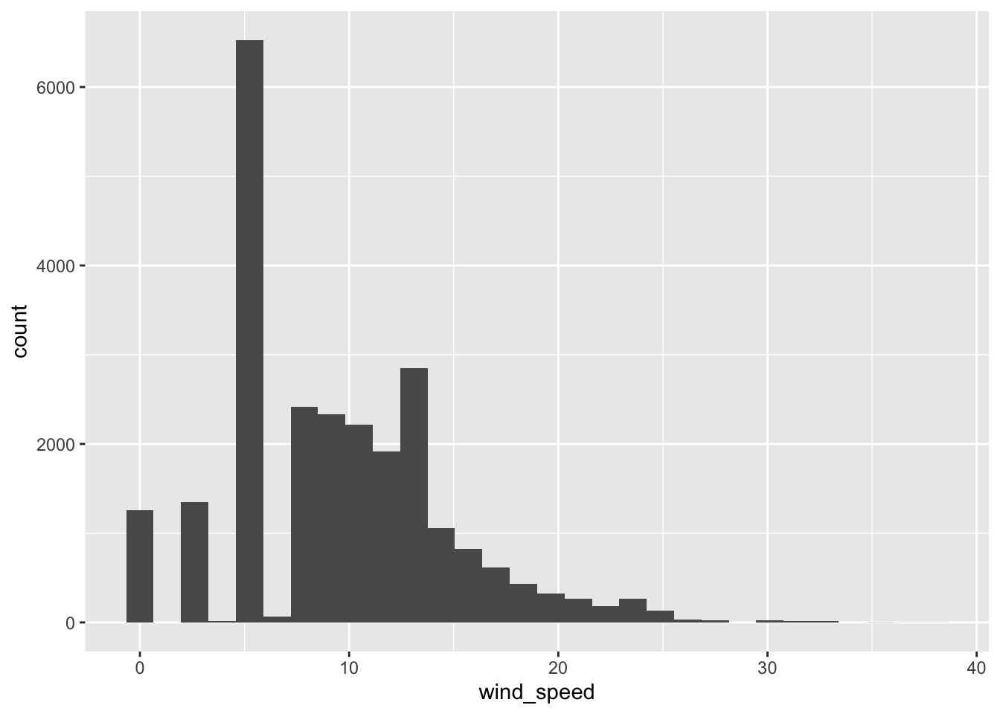
Boxplot Example
ggplot(data = weather, mapping = aes(x = factor(month), y = wind_speed)) +
geom_boxplot()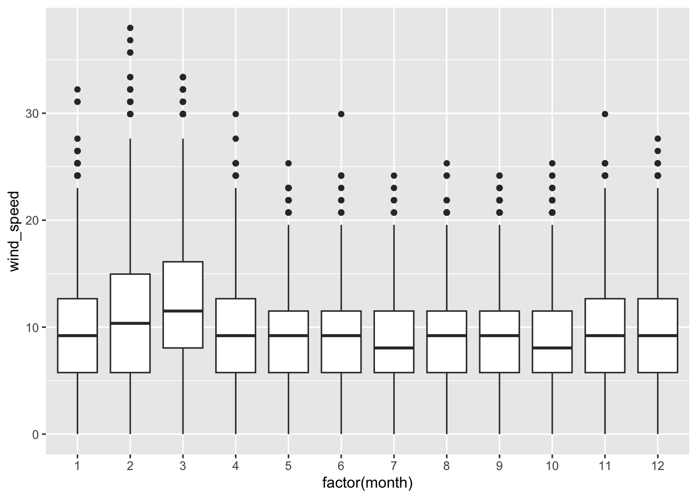
Barplot Example
Number of flights departing NYC in 2023 by airline using geom_bar
ggplot(data = flights, mapping = aes(x = carrier)) +
geom_bar()
Assignment
Lab 2 on Canvas